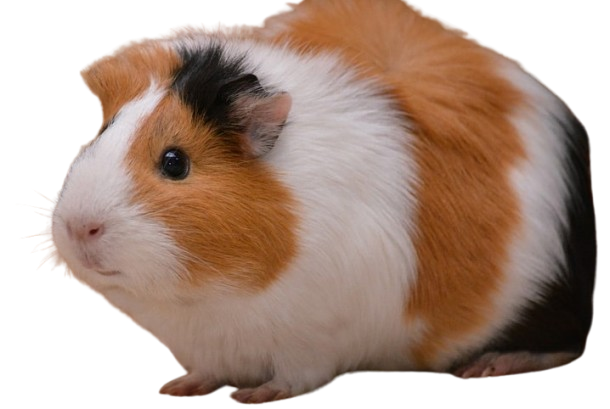

Capivara
#001descrição
-
A capivara ou carpincho (nome científico: Hydrochoerus hydrochaeris) é uma espécie de mamífero roedor. Está incluída no mesmo grupo de roedores ao qual se classificam as pacas, cutias, os preás e o porquinho-da-índia. Ocorre por toda a América do Sul ao leste dos Andes em habitats associados a rios, lagos e pântanos, do nível do mar até 1 300 m de altitude. Extremamente adaptável, pode ocorrer em ambientes altamente alterados pelo ser humano.
detalhes
- Alimentação: Herbivoros
- Reino: Animalia
- Família: Caviidae
- Subfamília: Hydrochoerinae
porquinho da india
#002

descrição
-
O porquinho-da-índia ou cuy (nome científico: Cavia porcellus) é uma espécie de roedor sul-americano da família dos caviídeos, que também inclui os preás, mocós e maras. Também são conhecidos popularmente como cobaia, cobaia-andino e preá-do-reino. São muito confundidos por leigos como um rato por terem muita semelhança. São oriundos dos Andes, na América do Sul, e estudos baseados em bioquímica e hibridação sugerem que eles são descendentes domesticados de uma espécie de preá intimamente relacionada como C. tschudii. Eles foram originalmente domesticados para a alimentação dos incas e outros povos indígenas, os quais ainda mantêm essa prática. Devido a essa domesticação, esses roedores não existem mais na natureza.
detalhes
- Alimentação: Herbivoros
- Reino: Animalia
- Família: Caviidae
- Subfamília: Cavioidea
Gatos
#003
descrição
-
O gato (nome científico: Felis catus) ou gato doméstico é um mamífero carnívoro da família dos felídeos, muito popular como animal de estimação. Ocupando o topo da cadeia alimentar, é predador natural de diversos animais, como roedores, pássaros, lagartixas e alguns insetos. Segundo pesquisas realizadas por instituições norte-americanas, os gatos consistem no segundo animal de estimação mais popular do mundo, estando numericamente atrás apenas dos peixes de aquário. Consta em trigésimo nono na lista das 100 das espécies exóticas invasoras mais daninhas do mundo da União Internacional para a Conservação da Natureza (UICN).
detalhes
- Alimentação: carnivoros
- Reino: Animalia
- Família: Felidae
- Subfamília: Felinae
Galinhas
#004descrição
-
Galo e galinha (nome científico: Gallus gallus domesticus) são respectivamente, macho e fêmea da subespécie doméstica da espécie Gallus gallus (galo-banquiva). São aves da família dos fasianídeos e da ordem dos galiformes. Quando nascem, são chamados de "pintinhos" (sem distinção de sexo), na fase juvenil são chamados de "frangos" ou "frangas". A espécie tem uma enorme importância para o ser humano, sendo o animal doméstico mais difundido e abundante do planeta e uma das fontes de proteína mais baratas. Além de sua carne, fornecem ovos. As penas também têm utilizações industriais. Segundo dados de 2003, havia cerca de 24 bilhões de galinhas no mundo. Em alguns países da África moderna, 90% dos lares criam galinhas. As galinhas são aves omnívoras, tendo preferência por sementes e pequenos invertebrados.
detalhes
- Alimentação: grãos
- Reino: Animalia
- Família: Phasianidae
Abelha Abutre
#005descrição
-
A abelha abutre, também conhecidas como abelha carniceira, são um pequeno grupo de três espécies de abelhas sem ferrão sul-americanas do gênero Trigona, que se alimentam de carne podre. As abelhas abutres produzem uma substância semelhante ao mel que não é derivada do néctar, mas sim de secreções ricas em proteínas das glândulas hipofaríngeas das abelhas. Essas secreções são provavelmente derivadas da dieta das abelhas, que consiste em carniça comida fora do ninho.[1] Esse comportamento incomum só foi descoberto em 1982, quase dois séculos depois que as abelhas foram classificadas pela primeira vez.
detalhes
- Alimentação: carniça
- Reino: Animalia
- Família: Apidae